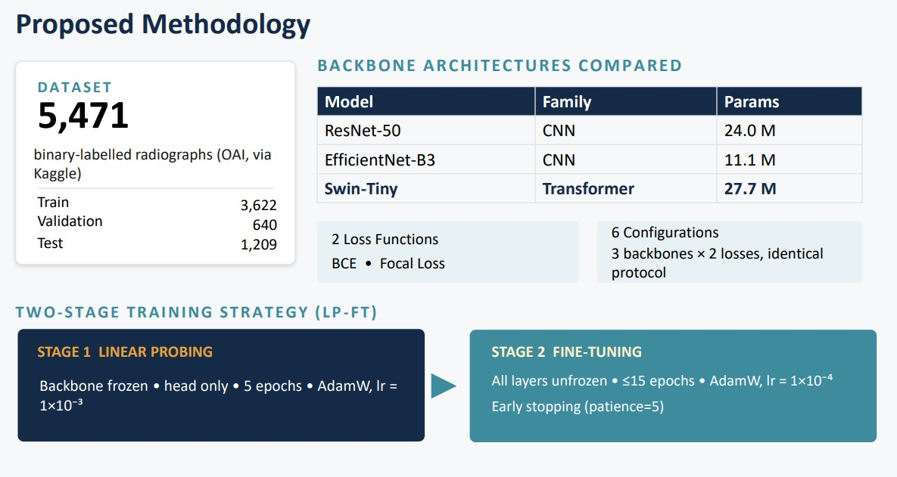
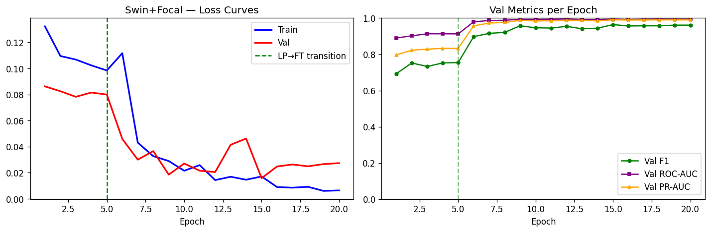
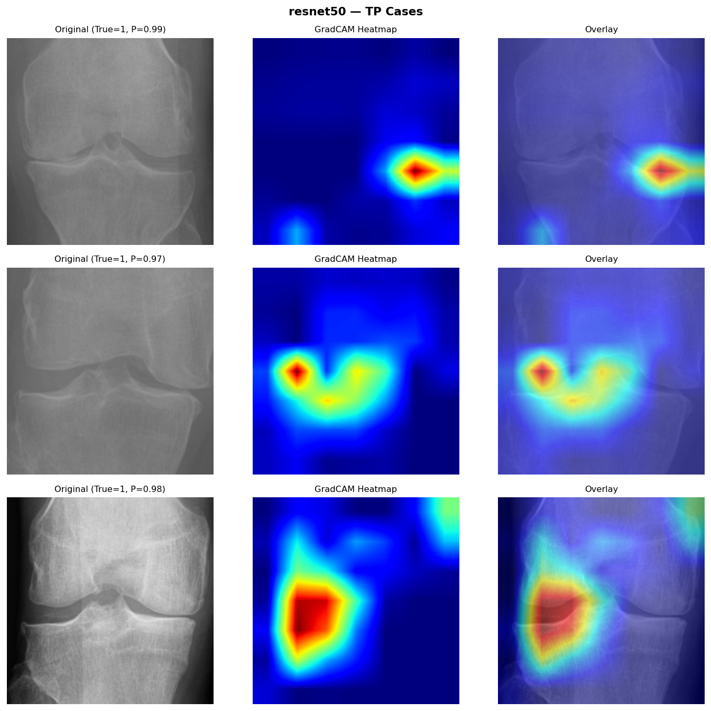

01 / 05
Dataset
Knee X-ray images sourced from the OAI (Osteoarthritis Initiative) dataset, labeled for binary OA classification — normal vs. osteoarthritic.
MS Thesis · Computer Vision · NED University
Detecting knee osteoarthritis by combining finite element stress analysis with transformer and CNN-based classification.
Master's thesis research comparing three deep-learning backbones — Swin-Tiny, EfficientNet-B3, and ResNet-50 — for binary knee OA detection. Trained with a two-stage LP‑FT strategy, WeightedRandomSampler for class imbalance, cosine annealing, and Test Time Augmentation. Explores fusing biomechanical FEA features with vision transformer classification — domain expertise from mechanical engineering applied directly to medical AI.

Research pipeline

Five stages, one model
01 / 05
Knee X-ray images sourced from the OAI (Osteoarthritis Initiative) dataset, labeled for binary OA classification — normal vs. osteoarthritic.
02 / 05
WeightedRandomSampler applied to handle class imbalance. Images normalized and augmented — flips, rotations, contrast — to improve generalization.
03 / 05
Finite element model of the knee joint built in ANSYS to extract stress and strain maps. FEA-derived features fused with vision backbone inputs for richer representation.
04 / 05
Two-stage strategy: first Linear Probing (freeze backbone, train head), then Full Fine-Tuning. Cosine annealing LR schedule. BCE and Focal Loss both evaluated.
05 / 05
Three backbones compared — Swin-Tiny, EfficientNet-B3, ResNet-50. Test Time Augmentation applied at inference. Metrics: accuracy, AUC, F1, confusion matrix.
Model comparison & findings

Can biomechanical FEA features improve deep-learning OA detection accuracy over imaging alone?
Swin-Tiny — vision transformer, global attention · EfficientNet-B3 — efficient scaling · ResNet-50 — CNN baseline
LP‑FT outperformed end-to-end fine-tuning from scratch across all three backbones. Focal Loss handled class imbalance better than BCE in OA-heavy splits.
Test Time Augmentation consistently improved AUC at inference with no additional training cost — particularly on borderline OA cases.
FEA-fused features added biomechanical context not visible in X-ray alone — stress concentration patterns aligned with clinically graded OA regions.
Knee osteoarthritis affects over 250 million people globally. Most detection tools rely on radiologist-graded X-rays alone — a slow, subjective process. Automating early detection could change when patients receive intervention.
The novel contribution here is the FEA fusion: instead of treating the knee as an image, the model incorporates biomechanical stress data from a finite element simulation. This encodes domain knowledge — how a degraded joint distributes force — into the learning pipeline. Few papers attempt this combination.
The LP‑FT training strategy and TTA setup are directly applicable beyond knee OA — any medical imaging task with small, imbalanced datasets benefits from the same approach.
Research stack
Open to research collaborations, freelance work combining FEA with AI, or medical imaging projects. Background in mechanical engineering (NED, BE) and AI (NED, MS) — this is the overlap I work in.